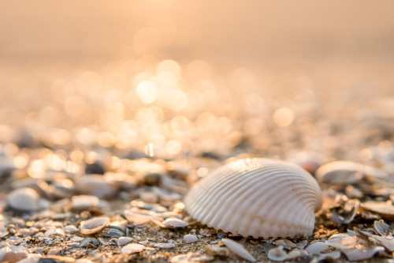

Getting to Gulf Coast Beaches: The Bridges
There are three bridges you can use to travel from Hillsborough County to Pinellas County:
- Courtney Campbell-Highway 60
- Howard Frankland-I-75
- Gandy-Highway 92
Click the largest shell in the image for a discount code!

Gulf Coast Beaches
Pinellas County, Florida
© 2023 GCB
mmachado17@hccfl.edu
888-555-2222